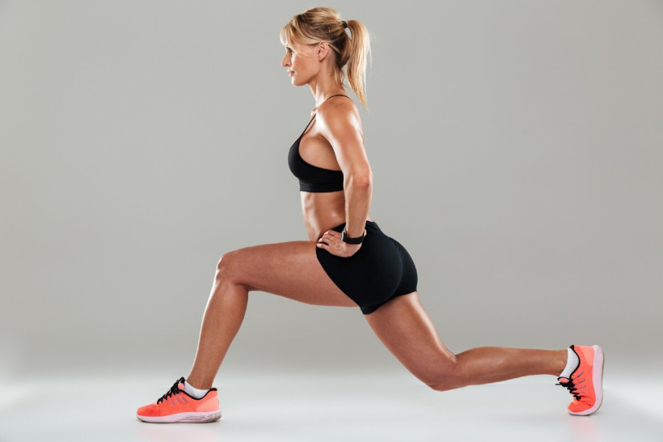
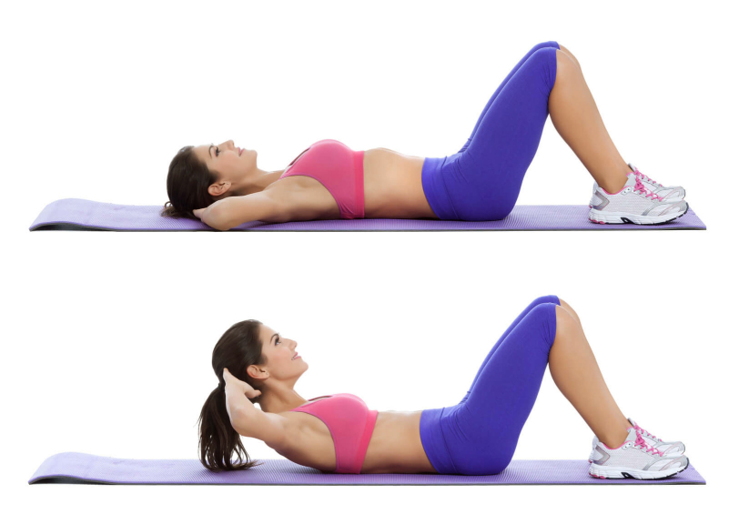
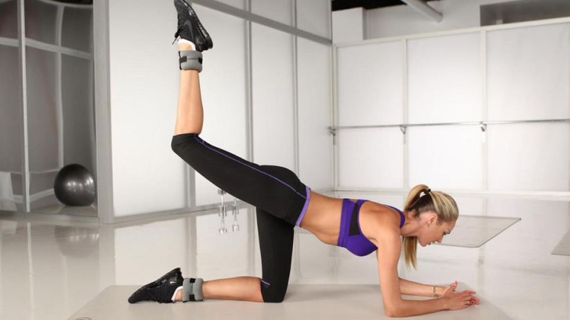
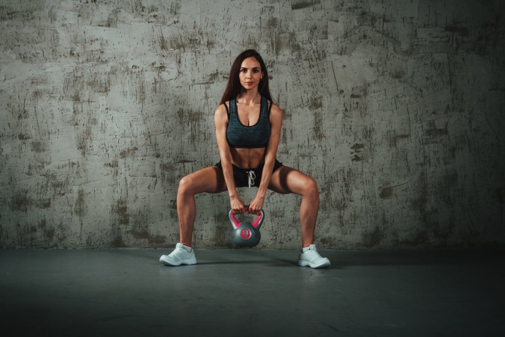
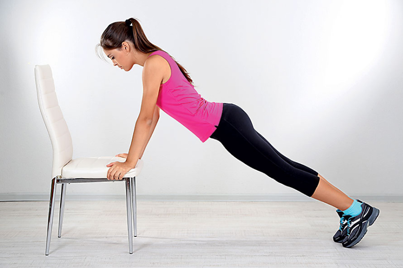

Правильно составленная программа тренировок позволяет добиться впечатляющих результатов. Даже занимаясь дома, девушкам следует придерживаться особого плана занятий. Новичкам подойдет программа начального уровня. Базовые занятия выбор девушек, имеющих фитнес опыт. Для тех, кто готов к интенсивным нагрузкам, разработан сложный уровень
Программы для начинающих
Если спортивный опыт отсутствует, кидаться с головой в изнемогающие тренировки не стоит. Добиться идеальных пропорций и подтянутого тела при помощи непосильных нагрузок не получится. Любые мышцы требуют отдыха – именно в этот период они не только расслабляются, но и растут. А нетренированные мышечные ткани под действием нагрузок приходят в гипертонус намного быстрее, что требует и более длительного отдыха. Поэтому программа домашних тренировок для девушек, которые раньше не занимались фитнесом, предусматривает не более трех силовых занятий в неделю с промежутками на отдых между ними в один день. Общее время каждой тренировки не будет превышать 40 минут. За этот период необходимо выполнить три сета, стараясь повторять каждое упражнение максимально возможное число раз, но не превышающее 20. Между каждым раундом делаем перерыв в 90 секунд.
Упражнение 1-й тренировки
Классические приседания. Выполняем обычные приседы, отводя ягодицы назад, чтобы бедра были параллельны полу.
Выпады из положения стоя. Делаем широкий шаг вперед и сгибаем ногу в колене. Тем временем касаемся коленом второй конечности пола. Ноги при выполнении выпадов чередуем.

Подъемы на носки. Стопы упираются в пол. Медленно поднимаемся на носочки и опускаемся назад.
Прямые скручивания. Из положения лежа поднимаем верх туловища на выдохе. Расстояние между подбородком и грудью должно быть не меньше сжатого кулака.

Отжимания. Стоя на коленях, опираемся на ладони, и на каждом выдохе сгибаем локти, стараюсь держать спину прямо, не поднимая ягодиц вверх.
Упражнения 2-й тренировки
Прямые выпады.
Обратные отжимания. Упираемся кистями в опору, а пятками в коврик. Все тело должно быть вытянуто в струнку. Сгибая и отводя в сторону локти, опускаем тело к полу. На вдохе выпрямляем руки.
Махи назад. Стоя на коленях с упором кистей в пол, на выдохе отводим прямую ногу резко назад и слегка вверх. Махи обеими ногами чередуем.

Обратные скручивания. Лежа на полу, упираемся стопами в пол, согнув колени. На выдохе притягиваем колени в груди.
Приседания «плие». Ноги ставим на ширине плеч, разведя ступни в стороны. Опускаем ягодицы к полу, сгибая ноги в коленях.

Упражнения 3-й тренировки
Классические приседания с подъемом на носки.
Отжимания от стула. Выполняем обычные отжимания, упираясь ладонями в любую возвышенную опору.

Обратные выпады. Из положения стоя, делаем широкий шаг назад и опускаем колено к полу. При выполнении упражнения ноги чередуем.
Комплексное скручивание. Ложимся на пол. На каждый выдох поднимаем одновременно вверх туловище и согнутые колени.
Перекаты с носков на пятки.